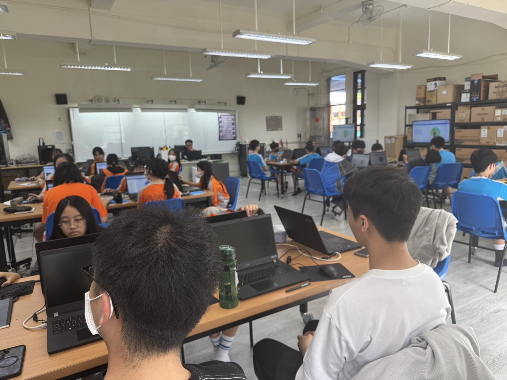
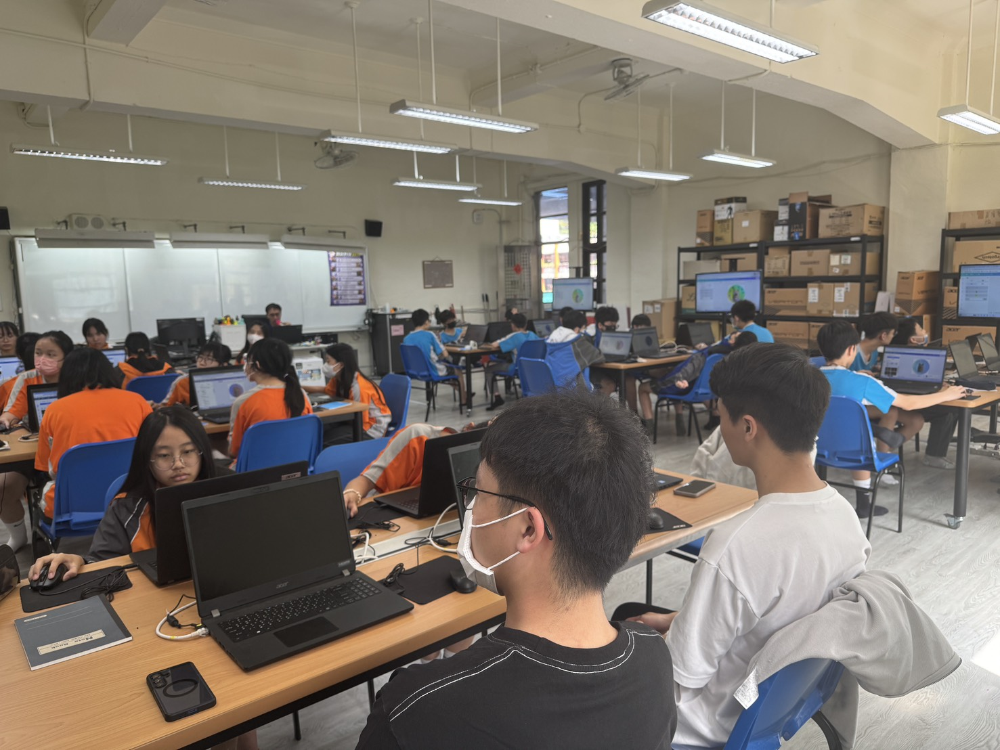
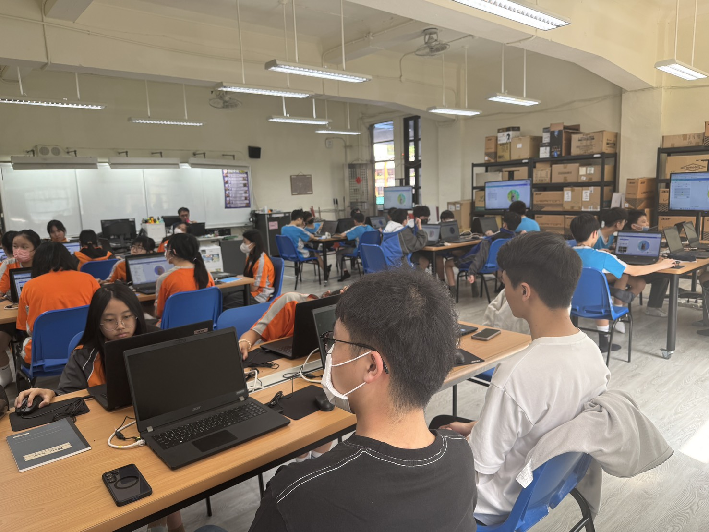

觀課心得分享
HTML 基礎與網頁製作實務
公開授課觀課紀錄
教學者：江建志 老師

江老師在講台或投影幕前講授，介紹 HTML 與 NVU 介面的開場畫面。
01
從觀念到實作：解析 HTML 語法
<p>、「內容」與「結束標籤」</p> 三部分組成，形成一對標籤包裹的結構單元。<h1>～<h6> 建立文件標題與段落層次。<img> 插入圖片，認識 src、alt 等屬性意義。<a> 建立連結，連結網頁內外部資源。
學生專注理解標籤結構，並實際輸入 HTML 語法進行練習。
02
工具輔助：所見即所得的網頁編輯

展現 NVU 排版實作，或老師在桌邊協助解決軟體操作問題的互動。
感謝江建志老師的公開授課與精彩示範
← → 或空白鍵切換投影片 · Ctrl+P 可列印匯出 PDF